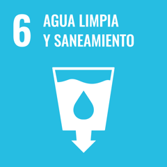
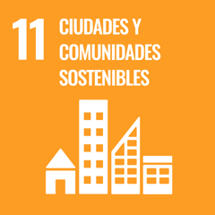

Monitor de Control del Programa FoDeMEEP RCU
Auditoría cuantitativa del Índice de Estado de Situación Institucional (IES 0–100), trazabilidad dinámica e histórica por edificio escolar, mapa geoespacial de Río Cuarto, semaforización de riesgos críticos y demarcación de competencias entre Mantenimiento FoDeMEEP y Obras Mayores de Provincia.
Datos consolidados a octubre de 2026 · Base de Datos del Relevamiento Técnico de Infraestructura Escolar (126 instituciones públicas provinciales · 14 secciones / 166 variables).
Mapa Geoespacial de Infraestructura Escolar — División Barrial Oficial RCU
Cartografía base Argenmap Gris (IGN) con la capa oficial de 62 barrios estandarizados (Dirección de Estadística RCU). Haga clic en un barrio para filtrar su polígono o en un marcador escolar para auditar su trazabilidad.
Semaforización de Riesgos Críticos (Kill-Switch)
Establecimientos con penalizador de seguridad activo (Gas NAG-200 ×0,70 · Riesgo Eléctrico ×0,75 · Cubierta/Cielorraso ×0,80). Prioridad de despacho inmediato.
Auditoría y Trazabilidad Dinámica e Histórica por Institución
Seleccione cualquier establecimiento para inspeccionar sus 7 subíndices IES, su curva histórica de evolución y simular en tiempo real el impacto restaurativo de resolver sus incidencias abiertas.
Desglose de las 7 Dimensiones del Índice IES (0–100)
Ponderación técnica por dimensión y comparación entre el relevamiento base y la simulación dinámica tras intervenciones.
Curva de Trazabilidad Histórica del Índice IES
Evolución acumulada del establecimiento ante cada relevamiento y orden de trabajo ejecutada.
Trazabilidad Dinámica de Incidencias y Simulador de Órdenes de Trabajo
Marque o desmarque la resolución de cada incidencia para verificar en vivo cuántos puntos recupera el Índice IES de la institución y cuándo se levanta el bloqueo de riesgo crítico (Kill-Switch).
Evidencias Fotográficas del Relevamiento en Campo
Registro fotográfico in situ capturado por el auditor durante el relevamiento edilicio, vinculado por sección y pregunta técnica.
Mantenimiento FoDeMEEP Río Cuarto
Intervenciones preventivas, correctivas y de emergencia edilicia ejecutadas por cuadrillas municipales y contratistas locales con fondos descentralizados FoDeMEEP.
Obras Mayores de Infraestructura Provincial
Intervenciones estructurales de envergadura, recambio integral de cubiertas, recalce de cimientos, ampliación de aulas y nuevas redes de servicios que requieren expediente provincial.
Expedientes de Obras Mayores de Provincia Detectados en Campo
Detalle de establecimientos de Río Cuarto que requieren derivación formal al Ministerio de Educación / Infraestructura de la Provincia de Córdoba.
Taxonomía Oficial de 20 Rubros Operativos FoDeMEEP Río Cuarto
Clasificación técnica de rubros operativos, cuadrilla asignada, incumbencia jurisdiccional y presupuesto de órdenes registradas.
Rendimiento por las 7 Dimensiones Ponderadas del IES
Promedio de cada dimensión (0–100) en las instituciones seleccionadas y su peso relativo en el cálculo del Índice de Estado de Situación Institucional.
Evolución Histórica del Parque Escolar RCU
Traza agregada del Índice IES promedio de Río Cuarto conforme se consolidan las auditorías técnicas del relevamiento.
Reglas de Penalización por Riesgo Crítico ("Kill-Switches")
Multiplicadores de seguridad que impiden que un establecimiento figure como "Aceptable" u "Óptimo" mientras persista un riesgo vital sin subsanar.
| Código | Condición Crítica Detectada | Factor Penalizador | Acción Operativa Obligatoria |
|---|---|---|---|
KS-GAS |
Fuga de gas o instalación fuera de norma NAG-200 | × 0,70 | Alerta Roja · Gasista Matriculado |
KS-ELEC |
Ausencia de disyuntor diferencial o conductores expuestos | × 0,75 | Normalización Tablero Seccional |
KS-ESTR |
Riesgo de desprendimiento de cielorraso, revoque o cubierta | × 0,80 | Clausura Preventiva Sector / Obra |
KS-AGUA |
Contaminación bacteriológica de cisterna o corte total de agua | × 0,80 | Camión Cisterna / Cloración |
Estado Situacional por Sector Barrial (Macrozonas RCU)
Comparativa territorial del Índice IES promedio, matrícula alcanzada y distribución del semáforo edilicio.
Base de Datos Consolidada del Relevamiento de Infraestructura Escolar
Listado integral de instituciones educativas públicas de Río Cuarto con su Índice IES, subíndices dimensionales, accesibilidad y demarcación de incidencias.
Vinculación con los Objetivos de Desarrollo Sostenible (ONU)
El Monitor de Control FoDeMEEP Río Cuarto contribuye de forma directa al cumplimiento y medición local de cuatro metas globales de la Agenda 2030.
ODS 4 · Educación de calidad
Meta 4.a: Construir y adecuar instalaciones educativas que tengan en cuenta las necesidades de los niños y las personas con discapacidad, ofreciendo entornos de aprendizaje seguros e inclusivos.

ODS 6 · Agua limpia y saneamiento
Garantía de provisión de agua potable segura, limpieza bromatológica semestral de tanques y mantenimiento de baterías sanitarias y redes cloacales escolares.

ODS 9 · Industria, innovación e infraestructura
Desarrollo de infraestructura resiliente y auditoría técnica digitalizada con trazabilidad criptográfica y mantenimiento predictivo/correctivo.

ODS 11 · Ciudades y comunidades sostenibles
Gestión descentralizada eficiente del patrimonio público educativo en los barrios de Río Cuarto y articulación interjurisdiccional Municipio–Provincia.